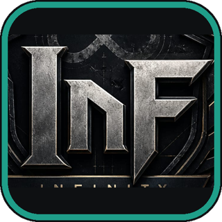
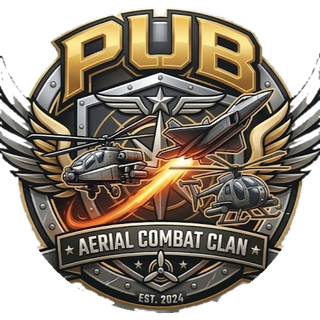

03Aliados
Quem luta do nosso lado
Toque ou passe o mouse num cartão: a página inteira estremece e o brasão sobe do mapa. No toque, toque fora para voltar. No site, cada clã só aparece se aceitar, e nenhum cartão tem botão de recrutamento.
COMUNIDADEPT · ES · EN

XPiradosjogos de combate
concedidodesde 08/2026
CLÃBATTLEFIELD 6
TAGinfantaria · multijogador
parceirodesde 08/2026
CLÃBATTLEFIELD 6

InFREDSEC
parceirodesde 09/2026
CLÃBATTLEFIELD 6

PUBcombate aéreo · pilotos
parceirodesde 11/2026
Prévia: a comunidade e os três clãs parceiros, TAG, InF e PUB.